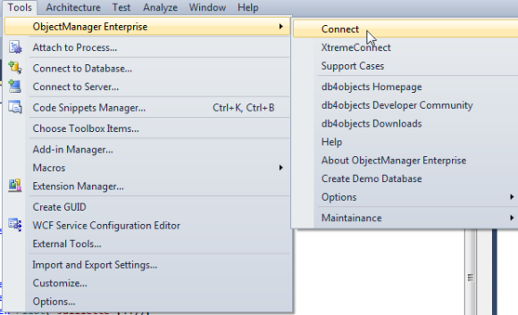
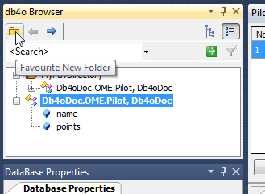
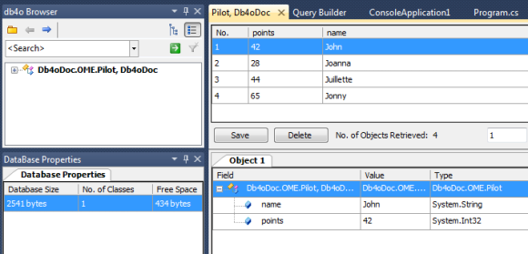
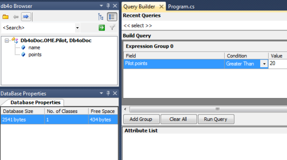
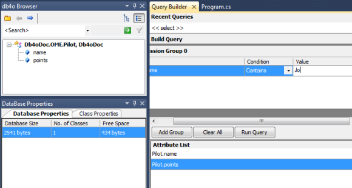
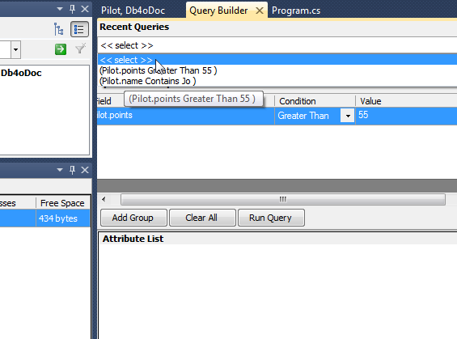

3. Object Manager Enterprise OverviewIf you did not install the Object Manager Enterprise yet, please, return to FirstGlance chapter and follow the installation instructions there. Once the Object Manager Enterprise (OME) is installed you can see it in Visual Studio Tools menu:  You should also be able to see OME toolbar icons: 3.1. Browsing the databaseIn the previous chapter we've learned how to create a new database and store objects in it. Let's create a new database and store some objects in it now:
Now we can see the resultant database in the Object Manager. Please select Tools->Object Manager Enterprise->Connect (or use a shortcut button from the toolbar menu) and browse to ome.db4o file in your Local Application Data folder. (normally it is C:\Documents and Settings\[user name]\Local Settings\Application Data on Windows XP/2000, c:/Users/[user name]/AppData/Local on Windows Vista). Once you've connected you will see a screen similar to this:  In this view you can see: - Db4o Browser: window displaying the contents of the open db4o database - Database Properties: window displaying the properties of the open database or the properties of the selected database class - Build Query: windows allowing to build a query using drag&drop functionality - Query Results: window to browse the results of the query execution The Db4o Browser window shows that there is 1 class in the database (Pilot), which contains 2 fields: _name and _points. In the Property Viewer you can see more information about the class fields. You can also change "Indexed" field and add the index to the database by pressing "Save Index" button. The filter panel on the top of the view allows easier navigation through the database with lots of different classes. You can use wildcard searches and benefit from the search history to make the selection faster. To further improve the navigation experience, you can create favourite folders and drag&drop frequently used classes into these folders.  3.2. QueryingIt is easy to retrieve all of the Pilot instances from the database: just right-click the Pilot class in Db4o Browser and select "Show All Objects". The list of the Pilot objects will be shown in the Query Result view: You can see object details in the detailed view below. Try to change any values and use Save button to persist the changes to the database. You can also use Delete button to delete objects from the database. For the objects containing field objects you will be prompted to use cascade on delete. More complex queries can be done by using Query Builder view:  Drag "name" field from the Db4o Browser view into the Query Builder view, set condition "Contains", put a value "a" and run the query. You can return to the Built Query tab and modify the query later on again. For example: add "AND" operator, drag "name" field, set Condition to "Starts With" and the value to "M". Re-run the query. If you want only selected fields to be displayed in the query result, drag and drop fields to be displayed from Db4o Browser into "Attribute List" window.  When the new query is created, the previous query is stored and can be selected from the history drop-down:  More sophisticated queries can be build by joining grouped constraints using "Add Group" button. When you are done working with the database in OME, you can close the connection by using Tools->Object Manager Enterprise-> Disconnect menu command or by using the equivalent button on the toolbar. In the next chapter we will explore more about db4o querying capabilities. You can continue using OME while going through the rest of this tutorial. If you are using the interactive version you will find the database in formula1.db4o file in your Local Application Data folder (normally it is C:\Documents and Settings\[user name]\Local Settings\Application Data on Windows XP/2000, c:/Users/[user name]/AppData/Local on Windows Vista) Please, remember to disconnect OME before running any of the tutorial examples, as only one active connection is allowed to the database file. |